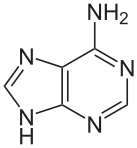
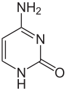
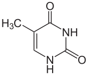
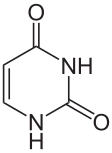
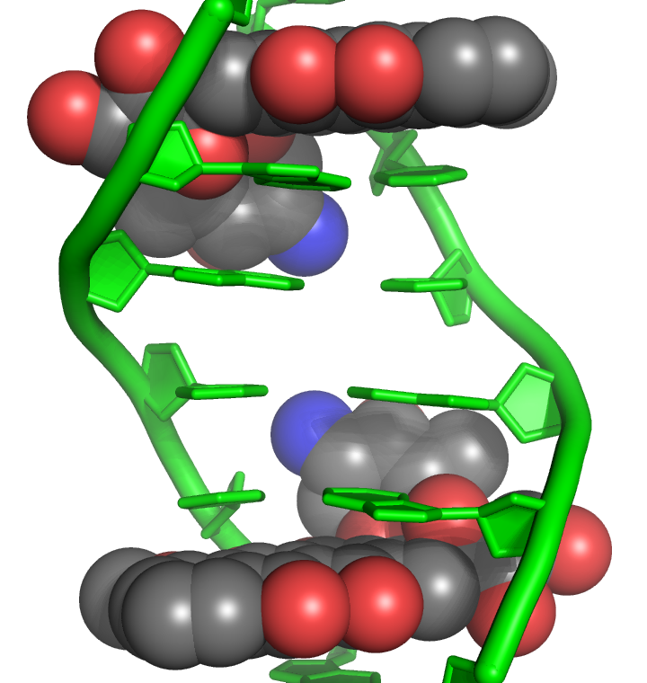

遺伝情報を担う分子の化学的基盤
5 つのミニツール + 12 問の復習クイズで、ヌクレオチドと二重らせんの化学を体で覚えよう
🧬 Nucleotide Builder
塩基・糖・リン酸を選ぶと、どんなヌクレオシド／ヌクレオチドができるかリアルタイムで分かる。
「ヌクレオシド」と「ヌクレオチド」の違い、命名法 (-osine / -idine、deoxy-)、DNA 基質 vs RNA 基質の区別をクリック 1 回で確認できる。
① 塩基 (Base)
② 糖 (Sugar)
③ リン酸 (Phosphate)
📐 構造式ギャラリー
塩基の構造式（クリックで展開）




糖・ヌクレオシド・ATP の構造式（クリックで展開）
構造式: Wikimedia Commons (Public Domain / CC BY-SA)
🔗 Polynucleotide Chain Builder
短い DNA 配列を入力すると、ホスホジエステル結合骨格を SVG で描画。
5' 末端 (遊離リン酸) と 3' 末端 (遊離 OH) の色分け、5'→3' 方向の矢印で、鎖の方向性が一目でわかる。
🎯 ポイント
- ホスホジエステル結合 = 前の糖の 3'-OH + 次の糖の 5'-リン酸 の間。「2 つのエステル結合」だから「ジ」エステル。
- 5' 末端: 最初のヌクレオチドの 5'-リン酸が遊離。3' 末端: 最後のヌクレオチドの 3'-OH が遊離。
- DNA/RNA 合成は常に 5'→3' 方向。新しいヌクレオチドの α-リン酸が、伸長中の鎖の 3'-OH と結合する。
- 配列表記の慣例: 5'→3' 方向で書く (左から右)。「
ATGCA」と書けば 5'-A-T-G-C-A-3' の意味。
🧪 DNA vs RNA Comparator
DNA と RNA の化学的違いは実は「たった 3 点」。
下のトグルで注目する違いを切り替えると、機能的帰結まで追える。
🧬 DNA (Deoxyribonucleic acid)
- 糖: 2'-デオキシリボース (2' 位は H)
- 塩基: A, G, C, T (チミン = 5-メチルウラシル)
- 構造: 主に二本鎖 (ds, 相補鎖と対合)
- 安定性: 化学的に安定 (半減期 3000 万年 以上)
- 役割: 情報保存 (長期記憶)
- 細胞内局在: 核、ミトコンドリア
- 合成基質: dATP, dGTP, dCTP, dTTP
🧬 RNA (Ribonucleic acid)
- 糖: リボース (2' 位に OH)
- 塩基: A, G, C, U (ウラシル = チミンの 5-メチル なし)
- 構造: 主に一本鎖 (ss, 局所的にヘアピン・ステムループ)
- 安定性: 不安定 (2'-OH が分子内求核で自己切断)
- 役割: 情報伝達、触媒、構造形成
- 細胞内局在: 核 + 細胞質 (mRNA, tRNA, rRNA, ncRNA)
- 合成基質: ATP, GTP, CTP, UTP
🌡️ Tm Calculator + Melting Curve
DNA 配列を入力すると、融解温度 (Tm) を計算して融解曲線を描画。
GC 含量と Tm の関係、長さの影響、ハイパークロミシティ (変性時の 260 nm 吸光度上昇) を体感できる。
🎯 Marmur の式 (短鎖オリゴヌクレオチド用)
Tm ≈ 4 × (G + C) + 2 × (A + T) °C
これは塩濃度 1 M NaCl、オリゴヌクレオチド (14-20 bp) 用の近似式。 G-C 対は水素結合 3 本、A-T 対は 2 本なので、GC の方が寄与が大きい。 PCR プライマー設計で日常的に使う (Tm が近い 2 本を選ぶ)。より正確には nearest-neighbor 法を使うが、原理は同じ。
💊 Nucleoside Analog Drug Matcher
6 つのヌクレオシドアナログ薬を、作用機序別の 3 カテゴリーにドラッグ＆ドロップ。
「ヌクレオチドの構造」がそのまま薬剤設計の原理になっていることを体感する。
💊 薬剤 (ドラッグ)
🎯 作用機序 (ドロップ)
🔍 鎖停止メカニズムのまとめ
AZT / Acyclovir / Tenofovir は共通して「3'-OH の欠如」が鍵。 宿主酵素 (またはウイルス酵素) にリン酸化されて三リン酸体 (active form) になり、 ウイルス DNA polymerase により取り込まれた後、次の dNTP と結合できないため鎖伸長が停止する。 これは Tool 🔗 Polynucleotide Chain で見た「5'→3' 合成は 3'-OH が必須」という原理そのもの。
5-FU / Cytarabine / Gemcitabine はがん細胞の核酸代謝を撹乱。 5-FU はチミジル酸合成酵素 (TS) を阻害、Cytarabine は DNA pol 阻害、Gemcitabine は 2',2'-difluoro で複数機序。 細胞分裂が活発ながん細胞を選択的に攻撃する。
📐 薬剤・DNA結合分子の構造式
構造式を見る（クリックで展開）
グアノシンアナログ（開環糖）
インターカレーター + TopoII阻害
DNA蛍光染色
副溝結合薬 (AT-rich)

構造式: Wikimedia Commons (Public Domain / CC BY-SA)
✅ 復習クイズ (12 問)
各問題の選択肢をクリックすると、その場で正解・解説が表示されます。
📘 問1-6: 基本問題 (ヌクレオチド構造・命名・方向性)
📚 問7-9: スピーカーノート S20-S21 + 教科書ベース (必須)
🏆 問10-12: 薬剤師国試過去問を改変 (発展・チャレンジ)
結果
💡 合格基準: 12問中10問以上正解で修了証を発行できます。不合格の場合はリセットして再挑戦してください（選択肢の順番が毎回変わります）。